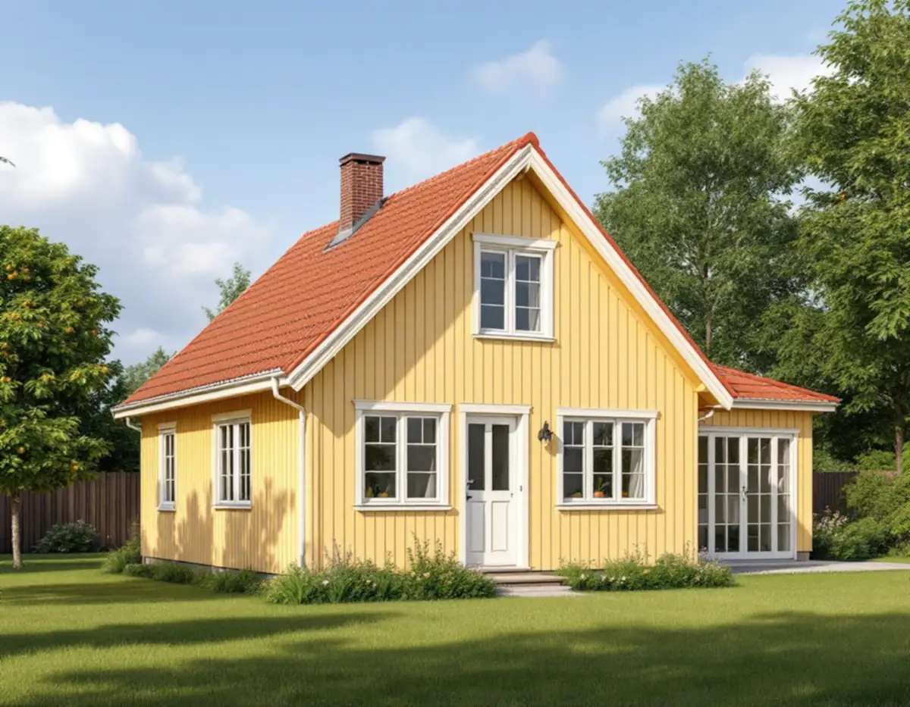
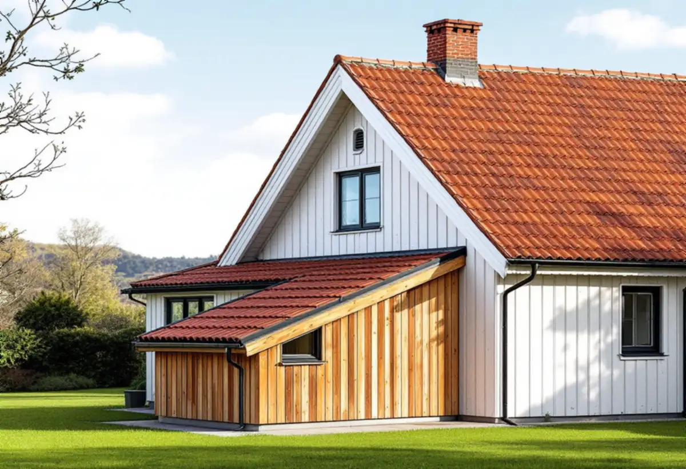

Karta och detaljplan
Vi kontrollerar Stadsmuseets klassificering, detaljplanen och vad som redan byggts lovfritt på huset.
I Bromma handlar en tillbyggnad oftast om att ge ett litet hus mer plats utan att förstöra det som gör gatan fin. Småstugorna i Norra Ängby och Olovslund och villorna i trädgårdsstäderna ritades som enkla volymer, och staden har skrivit ner hur de kan byggas till. Geal Entreprenad AB utgår från Bromma, bygger till villor och småhus som total entreprenad och lämnar ett skriftligt kostnadsförslag efter ett gratis platsbesök.

Sedan den 1 december 2025 krävs inte bygglov för en tillbyggnad på högst 30,0 kvadratmeter bruttoarea eller öppenarea som inte går över husets taknock (PBL 9 kap. 10 §). Gränsen gäller sammanlagt. Stockholms stad påpekar att tidigare lovfria tillägg ska räknas in, till exempel ett friggebodsskärmtak, en attefallstillbyggnad eller attefallstakkupor.
Staden räknar uterum, skärmtak, större takkupor och lågt sittande balkonger som tillbyggnader. Har huset redan fått en lovfri attefallstillbyggnad på 15 kvadratmeter återstår alltså bara hälften av potten.
För en- och tvåbostadshus får en lovfri tillbyggnad strida mot detaljplanen. Staden ger som exempel att den får hamna på mark som inte får bebyggas, så kallad prickmark. Placeras den närmare gränsen än 4,5 meter behövs ändå ett skriftligt medgivande från de berörda grannarna – och för gatu- och parkmark är det oftast kommunen som ska ge det.

Enligt Stadsmuseets text om Ängbyplan byggdes 1 200 småstugor i Norra Ängby 1931–38 genom självbyggeri under ledning av stadens fastighetskontor. Byggnadsdelarna tillverkades i element på fabrik, och de blivande ägarna bidrog med arbete motsvarande en tiondel av kostnaden. I stadens vägledning för småhusområden räknas också Olovslund, Bällsta och Eneby som småstugeområden.
Vägledningen konstaterar att många av stugorna har byggts till under åren och att förändringarna främst har gjorts mot trädgårdssidan, vilket har bevarat områdenas karaktär. Det rekommenderade sättet är en tillbyggnad som underordnar sig huvudbyggnaden, där husets ursprungliga form fortfarande går att läsa ut.
Ett av stadens exempel visar en tillbyggnad där nocken ligger lägre än huvudbyggnadens och takfoten på samma nivå. Det är en detalj vi ritar in redan i skissen, eftersom den styr både takets anslutning och hur huset upplevs från gatan.
Olovslund, Ålstensgatan och Södra Ängby pekas i stadens vägledning ut som riksintressen för kulturmiljövården. Trädgårdsstäderna, bland dem Äppelviken, Smedslätten, Ålsten, Höglandet och Nockeby, beskrivs som kulturhistoriskt värdefulla miljöer.
Lovbefrielsen gäller inte för en byggnad eller ett område som är särskilt värdefullt (PBL 9 kap. 37 §). Stockholms stad hänvisar till Stadsmuseets klassificeringskarta som en första indikation, men påminner om att alla byggnader och områden ännu inte är inventerade och att museet ibland behöver göra en bedömning.
Därför börjar vi i Bromma med kartan och detaljplanen innan något ritas. Behövs lov tar vi fram underlaget, och behövs det inte vet du ändå att tillbyggnaden går att genomföra.
För trädgårdsstäderna skriver staden att de öppna kvarteren med vyer över trädgårdarna är ett viktigt karaktärsdrag. Tillbyggnader, takkupor och terrasser bör i första hand göras mot trädgårdssidan och placeras så att siktlinjen från gatan in mot trädgårdarna hålls öppen.
Utgångspunkten är de ursprungliga husens volym, proportioner och takformer. I Smedslätten och Ålsten är det ofta en och en halv våning med brant sadeltak i rött tegel, och en tillbyggnad som följer takvinkeln smälter in bättre än en som avviker. Hur den nya takdelen ansluter mot det gamla taket beskriver vi under takbyte i Bromma.
Ska fasaden på resten av huset göras om samtidigt kan det vara klokt att samordna arbetena, se fasadrenovering i Bromma.
Vi kontrollerar Stadsmuseets klassificering, detaljplanen och vad som redan byggts lovfritt på huset.
Vi mäter upp huset, avstånd till gräns och takets höjder och går igenom dina önskemål.
Ett förslag som underordnar sig huvudbyggnaden och följer stadens vägledning.
Grannarnas skriftliga medgivande, anmälan eller bygglov tas fram innan arbetet börjar.
Ett skriftligt förslag med grund, stomme, tak och invändiga arbeten var för sig.
Vi bygger, ansluter tak och fasad mot det gamla huset och går igenom resultatet med dig.
Skatteverket godkänner rotavdrag för tillbyggnad av ett småhus om någon av tillbyggnadens sidor sitter ihop med husets befintliga yttervägg till minst 75 procent, eller om det finns en dörr emellan. Större delen av den ursprungliga stommen ska behållas, och huset ska vara äldre än fem år.
Avdraget är 30 procent av arbetskostnaden, högst 50 000 kr per person och år. Material och resor ger inget avdrag. Geal drar avdraget direkt på fakturan.
Tillbyggnadens storlek och grundläggning, hur taket ska anslutas mot ett befintligt tegeltak, om det behövs bygglov, anmälan eller grannmedgivanden, vilka installationer som ska dras in och hur mycket av det gamla huset som öppnas upp. Efter ett gratis platsbesök får du ett skriftligt kostnadsförslag.
Mer boyta i samma hus.
Tillbyggnad →Takbyte, takbesiktning och plåtarbeten.
Takläggare i Bromma →Trädgårdsstäder, tegel och funkistak.
Takrenovering i Bromma →Vind, bärande väggar och en andra bostad.
Byggföretag i Bromma →Småspröjs, småstugor och funkis i Bromma.
Fönsterbyte i Bromma →Kupor, låga tak och bleck i Bromma.
Plåtslagare i Bromma →Lertegel, småstugor och solceller i Bromma.
Takbyte i Bromma →Trävillor, småstugor och funkisvillor.
Badrumsrenovering i Bromma →Trädgårdsstäder, småstugor och funkis i Bromma.
Fasadrenovering i Bromma →Villor i trädgårdsstäderna och lägenheter i smalhus.
Golvläggare i Bromma →Imkanal, småstugor och trävillor.
Köksrenovering i Bromma →Fasad och interiör i Brommas villastäder.
Målare i Bromma →Verandor, entréer och altaner.
Snickare i Bromma →